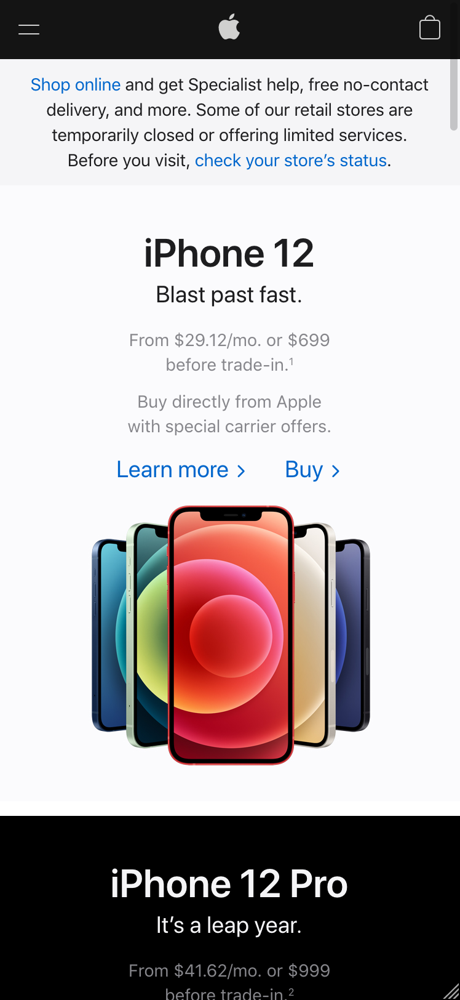
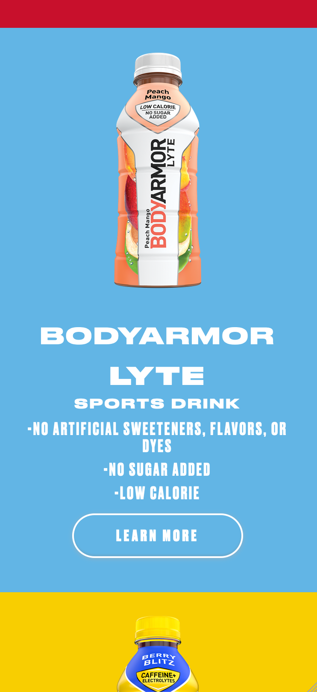
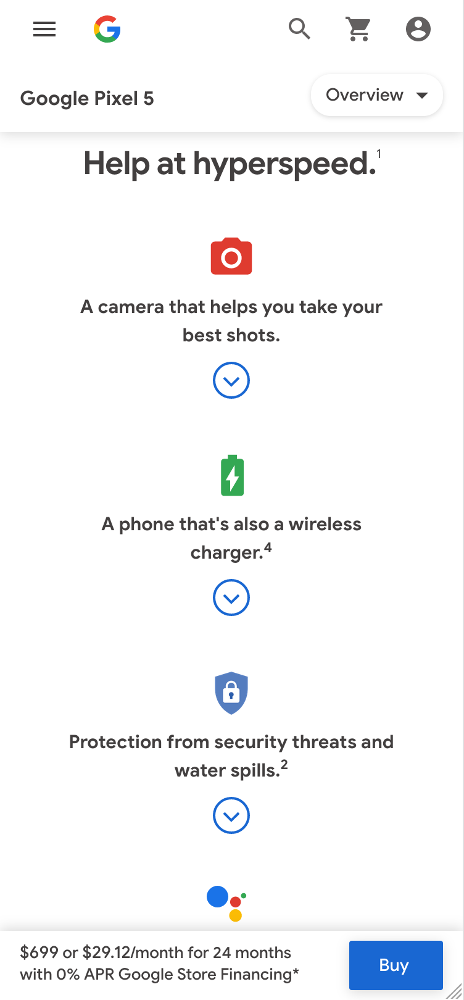

White Space and Clean Design
Apple
When designers think of simplicity and elegance, often Apple comes to mind. Their use of white space and simplicity is
exemplified here. They have a good balance especially on their desktop sites, but the mobile sites maintain the same feel.
Contrast
BODYARMOR
BODYARMOR did a great job with using contrast-especially in the color department. They have bright, primary colors with big
white text on top. The color of bottle they placed on the page stands off against the background. Excellent work.
Alignment
Google Pixel
Google also does a great gob at simplicity, but their alignment is always spot on. They used a more conservative alignment on
their mobile site. Almost everything is centered aligned and very strongly. Text, icons, titles, everything. You can draw a
line straight down the middle of the site.